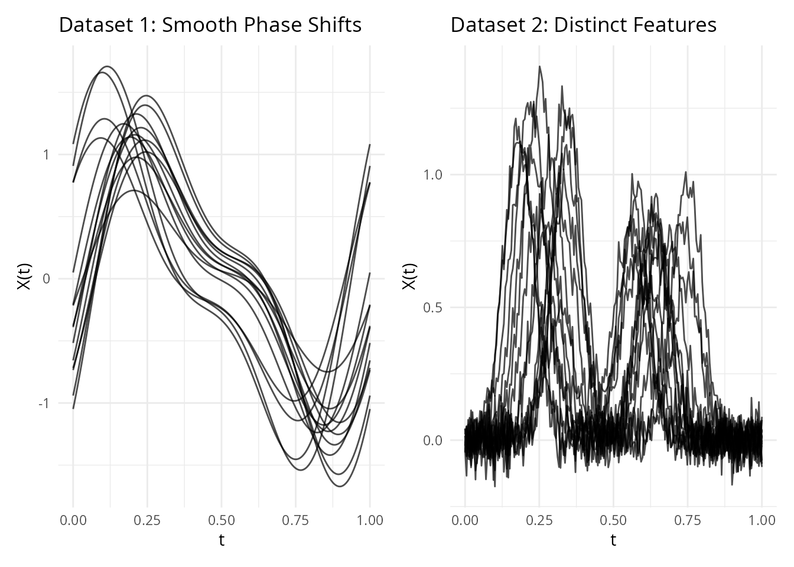
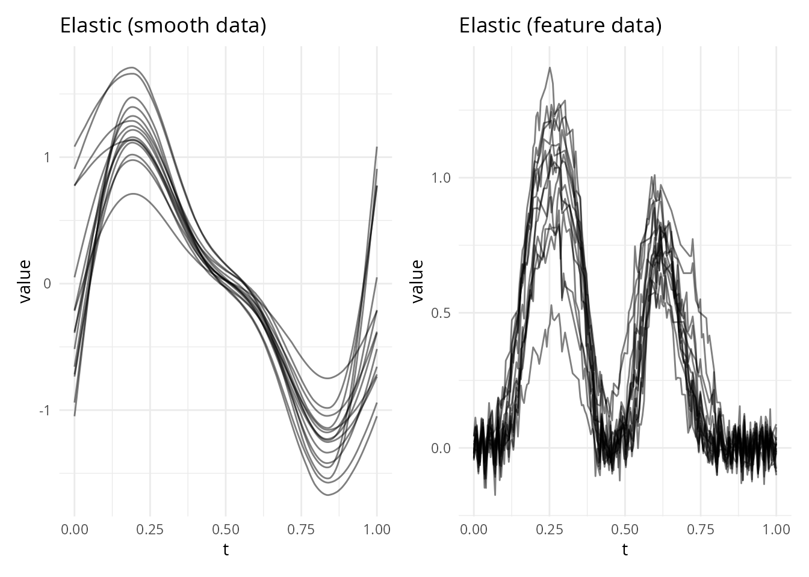
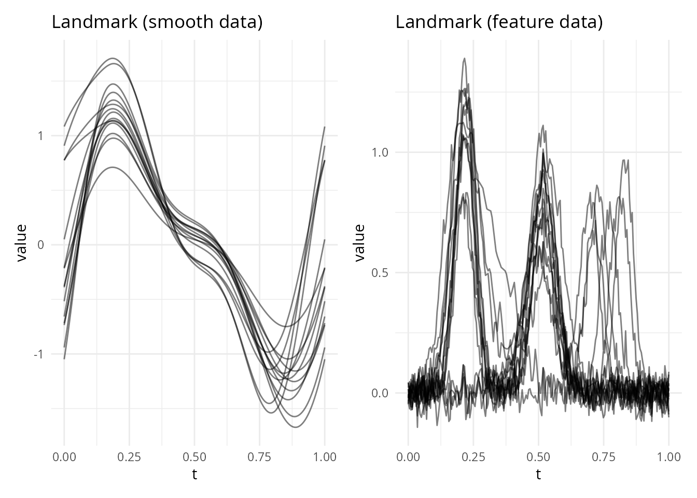
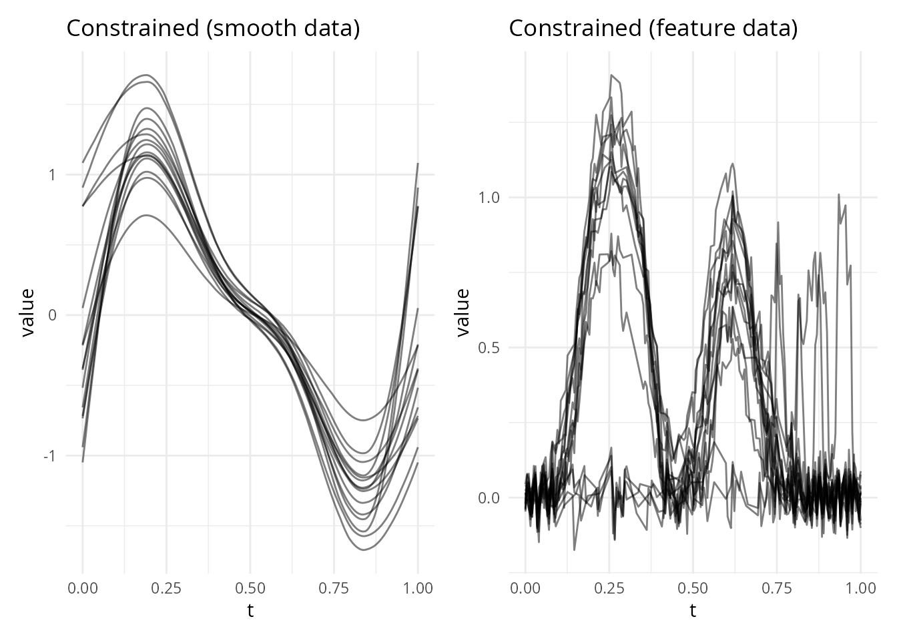
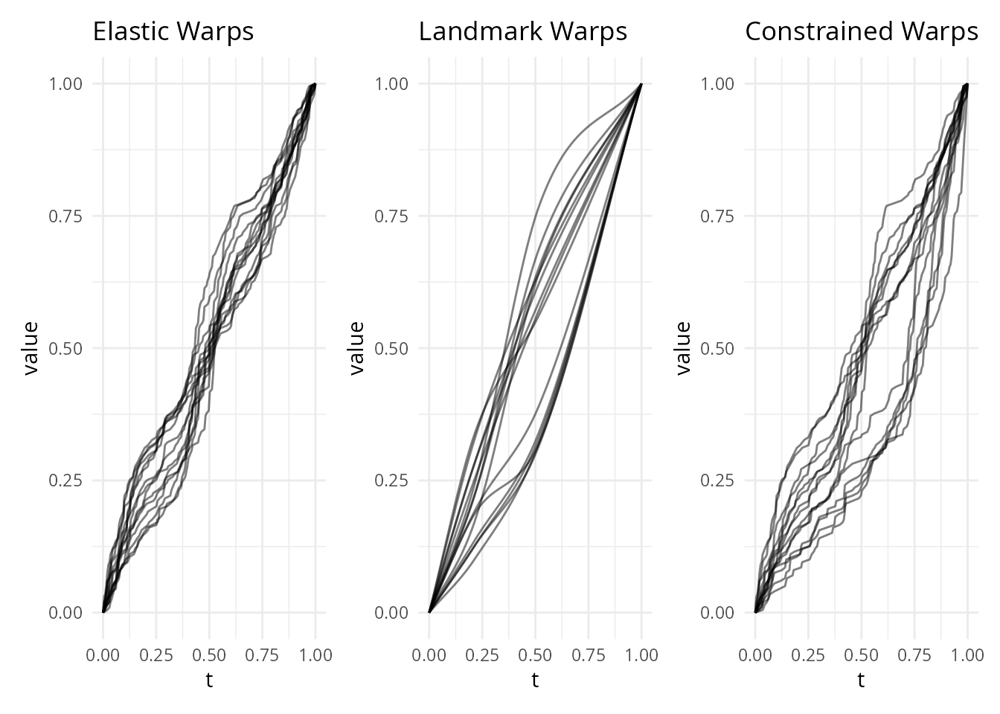
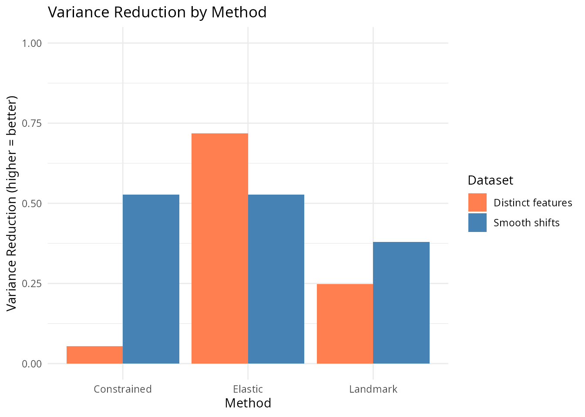
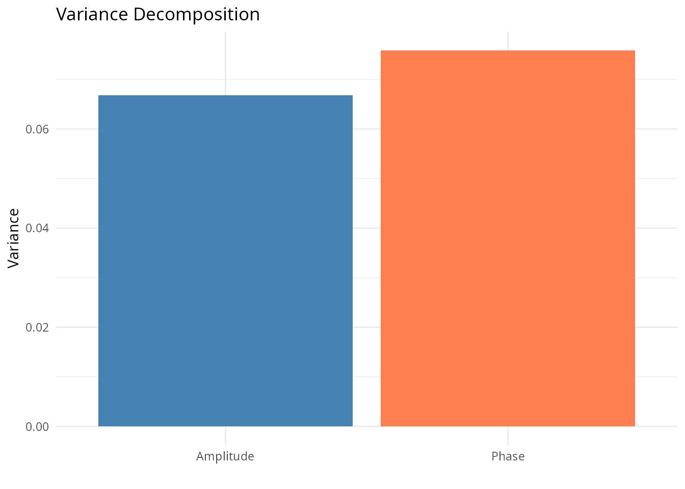
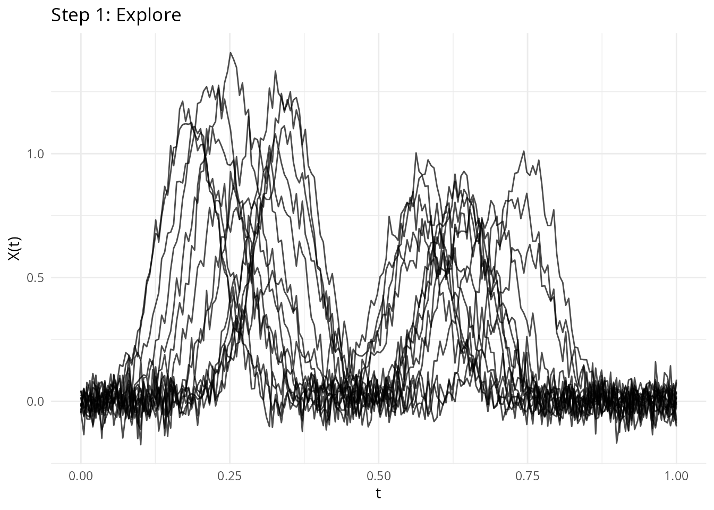

Comparing Alignment Methods
Source:vignettes/articles/alignment-comparison.Rmd
alignment-comparison.RmdIntroduction
fdars provides four approaches to curve alignment, each with different trade-offs in terms of automation, smoothness, interpretability, and speed. This article compares them side-by-side on the same data, and provides guidance on when to use each method.
The four methods are:
-
Elastic alignment (
elastic.align,karcher.mean) – global optimization via dynamic programming in SRSF space. Seevignette("elastic-alignment", package = "fdars")for full details. -
Landmark registration
(
landmark.register) – feature-based piecewise-linear warping. Seevignette("landmark-registration", package = "fdars")for full details. -
Constrained elastic alignment
(
elastic.align.constrained) – elastic alignment with landmark pass-through constraints -
TSRVF (
tsrvf.transform) – not an alignment method per se, but a linearization of elastic alignment for downstream analysis. Seevignette("tsrvf", package = "fdars")for full details.
Test Data
We use two datasets that highlight different alignment challenges.
Dataset 1: Smooth Phase Shifts
Curves with smooth, global timing differences – the classic alignment scenario:
set.seed(42)
argvals <- seq(0, 1, length.out = 200)
n <- 15
data_smooth <- matrix(0, n, 200)
for (i in 1:n) {
shift <- runif(1, -0.1, 0.1)
amp <- rnorm(1, 1, 0.15)
data_smooth[i, ] <- amp * sin(2 * pi * (argvals - shift)) +
0.4 * amp * sin(4 * pi * (argvals - shift * 0.7))
}
fd_smooth <- fdata(data_smooth, argvals = argvals)Dataset 2: Distinct Feature Shifts
Curves with clearly identifiable peaks that shift independently – where domain knowledge matters:
data_feat <- matrix(0, n, 200)
for (i in 1:n) {
pk1 <- runif(1, 0.15, 0.35)
pk2 <- runif(1, 0.55, 0.75)
w1 <- rnorm(1, 1, 0.2)
w2 <- rnorm(1, 0.8, 0.15)
data_feat[i, ] <- w1 * exp(-200 * (argvals - pk1)^2) +
w2 * exp(-200 * (argvals - pk2)^2) +
0.05 * rnorm(200)
}
fd_feat <- fdata(data_feat, argvals = argvals)
p1 <- plot(fd_smooth) + labs(title = "Dataset 1: Smooth Phase Shifts")
p2 <- plot(fd_feat) + labs(title = "Dataset 2: Distinct Features")
p1 + p2
Method 1: Elastic Alignment
Elastic alignment finds the globally optimal warping function by minimizing the distance between SRSFs via dynamic programming. It requires no feature detection and produces smooth, diffeomorphic warping functions.
Mathematical basis: minimize over the warping group , where is the SRSF of .
ea_smooth <- elastic.align(fd_smooth)
ea_feat <- elastic.align(fd_feat)
p1 <- plot(ea_smooth, type = "aligned") + labs(title = "Elastic (smooth data)")
p2 <- plot(ea_feat, type = "aligned") + labs(title = "Elastic (feature data)")
p1 + p2
Method 2: Landmark Registration
Landmark registration detects features (peaks, valleys, etc.) and warps curves so that corresponding features align to common target positions. The warping is piecewise-linear between anchor points.
Mathematical basis: For landmarks and targets , construct as a piecewise-linear function satisfying .
lr_smooth <- landmark.register(fd_smooth, kind = "peak", min.prominence = 0.3,
expected.count = 1)
lr_feat <- landmark.register(fd_feat, kind = "peak", min.prominence = 0.2,
expected.count = 2)
p1 <- plot(lr_smooth, type = "registered") +
labs(title = "Landmark (smooth data)")
p2 <- plot(lr_feat, type = "registered") +
labs(title = "Landmark (feature data)")
p1 + p2
Method 3: Constrained Elastic Alignment
Constrained elastic alignment combines the smooth, globally optimal warping of elastic alignment with landmark pass-through constraints. The warping is computed by segmented dynamic programming between landmark anchor points.
Mathematical basis: minimize subject to for each landmark pair.
ec_smooth <- elastic.align.constrained(fd_smooth, kind = "peak",
min.prominence = 0.3,
expected.count = 1)
ec_feat <- elastic.align.constrained(fd_feat, kind = "peak",
min.prominence = 0.2,
expected.count = 2)
p1 <- plot(ec_smooth, type = "aligned") +
labs(title = "Constrained (smooth data)")
p2 <- plot(ec_feat, type = "aligned") +
labs(title = "Constrained (feature data)")
p1 + p2
Warping Function Comparison
The warping functions reveal the fundamental difference between methods. Elastic produces smooth warps, landmark produces piecewise-linear warps, and constrained is smooth but passes through landmark anchor points:
p1 <- plot(ea_feat, type = "warps") + labs(title = "Elastic Warps")
p2 <- plot(lr_feat, type = "warps") + labs(title = "Landmark Warps")
p3 <- plot(ec_feat, type = "warps") + labs(title = "Constrained Warps")
p1 + p2 + p3
Quantitative Comparison
Variance Reduction
Variance reduction (VR) measures how much pointwise variance is removed by alignment. Higher VR means more phase variability was captured:
vr <- function(original, aligned) {
var_orig <- mean(apply(original$data, 2, var))
var_aligned <- mean(apply(aligned$data, 2, var))
1 - var_aligned / var_orig
}
results <- data.frame(
Dataset = rep(c("Smooth shifts", "Distinct features"), each = 3),
Method = rep(c("Elastic", "Landmark", "Constrained"), 2),
VR = c(
vr(fd_smooth, ea_smooth$aligned),
vr(fd_smooth, lr_smooth$registered),
vr(fd_smooth, ec_smooth$aligned),
vr(fd_feat, ea_feat$aligned),
vr(fd_feat, lr_feat$registered),
vr(fd_feat, ec_feat$aligned)
)
)
results$VR <- round(results$VR, 3)
print(results)
#> Dataset Method VR
#> 1 Smooth shifts Elastic 0.527
#> 2 Smooth shifts Landmark 0.380
#> 3 Smooth shifts Constrained 0.527
#> 4 Distinct features Elastic 0.718
#> 5 Distinct features Landmark 0.248
#> 6 Distinct features Constrained 0.054
ggplot(results, aes(x = Method, y = VR, fill = Dataset)) +
geom_col(position = "dodge") +
labs(title = "Variance Reduction by Method",
y = "Variance Reduction (higher = better)") +
scale_fill_manual(values = c("Smooth shifts" = "steelblue",
"Distinct features" = "coral")) +
ylim(0, 1)
Alignment Quality Diagnostics
For the Karcher mean (elastic), we can compute detailed diagnostics:
km_smooth <- karcher.mean(fd_smooth, max.iter = 15)
aq_smooth <- alignment.quality(fd_smooth, km_smooth)
print(aq_smooth)
#> Alignment Quality Diagnostics
#> Mean warp complexity: 0.1574
#> Mean warp smoothness: 94.7516
#> Total variance: 0.1426
#> Amplitude variance: 0.0668
#> Phase variance: 0.0758
#> Phase/Total ratio: 0.5316
#> Mean VR: 0.4576Amplitude-Phase Decomposition
Elastic alignment uniquely provides a principled decomposition of total variability into amplitude and phase components:
plot(aq_smooth, type = "variance")
Decision Guide
Summary Table
| Method | Warping | Automation | Speed | Smoothness | Feature control |
|---|---|---|---|---|---|
| Elastic | Smooth diffeomorphism | Fully automatic | High | None | |
| Landmark | Piecewise-linear | Needs feature type | Low (corners at landmarks) | Full | |
| Constrained | Smooth with anchors | Needs feature type | High (between landmarks) | Partial | |
| TSRVF | (uses elastic) | Fully automatic | + PCA | High | None |
When to Use Each Method
Use elastic alignment when:
- You have no prior knowledge about which features should correspond
- Curves have smooth, continuous timing differences
- You want a principled metric space structure (Fisher-Rao distance)
- You need amplitude-phase decomposition or TSRVF for downstream analysis
Use landmark registration when:
- Features are well-defined and domain-meaningful (ECG waves, spectral peaks)
- You need guaranteed feature correspondence
- Speed is critical (linear in grid size per landmark)
- Curves have complex warping that confuses global DP (e.g., features moving in opposite directions)
Use constrained elastic alignment when:
- You want both smooth warps and feature correspondence
- Some features must align exactly, but the warping between them should be optimized
- You are comparing elastic and landmark results and want a middle ground
Use TSRVF when:
- You need to perform PCA, regression, or classification on aligned data
- You want a Euclidean representation of curve shapes
- You have already computed a Karcher mean and want to extract tangent vectors
Pitfalls
| Method | Common pitfall | Mitigation |
|---|---|---|
| Elastic | Over-warping (pinching) on noisy data | Increase lambda penalty |
| Landmark | Mismatched landmark correspondence | Use expected.count, increase
min.prominence
|
| Constrained | Too few landmarks = barely constrained | Detect multiple landmark types |
| TSRVF | Linearization error for curves far from mean | Check reconstruction quality |
Workflow Example
A typical analysis workflow combining multiple methods:

# 2. Detect features to understand structure
lms <- detect.landmarks(fd_feat, kind = "peak", min.prominence = 0.2)
cat("Landmarks per curve:",
paste(sapply(lms, nrow), collapse = ", "), "\n")
#> Landmarks per curve: 3, 2, 3, 5, 2, 2, 3, 2, 4, 2, 4, 2, 2, 3, 3
# 3. Align (choose method based on data)
lr <- landmark.register(fd_feat, kind = "peak", min.prominence = 0.2,
expected.count = 2)
# 4. For downstream analysis, compute Karcher mean + TSRVF
km <- karcher.mean(lr$registered, max.iter = 10)
tv <- tsrvf.from.alignment(km)
# 5. Standard PCA on tangent vectors
pca <- prcomp(tv$tangent_vectors$data)
var_exp <- cumsum(pca$sdev^2 / sum(pca$sdev^2))
cat("Variance explained (first 3 PCs):",
round(var_exp[1:3] * 100, 1), "%\n")
#> Variance explained (first 3 PCs): 16.5 28.8 39.9 %See Also
-
vignette("elastic-alignment", package = "fdars")– elastic alignment framework, quality diagnostics, amplitude-phase decomposition -
vignette("landmark-registration", package = "fdars")– landmark detection, prominence filtering, registration workflow -
vignette("tsrvf", package = "fdars")– TSRVF for linearized elastic analysis, elastic FPCA -
vignette("distance-metrics", package = "fdars")– Soft-DTW, elastic, amplitude, and phase distances